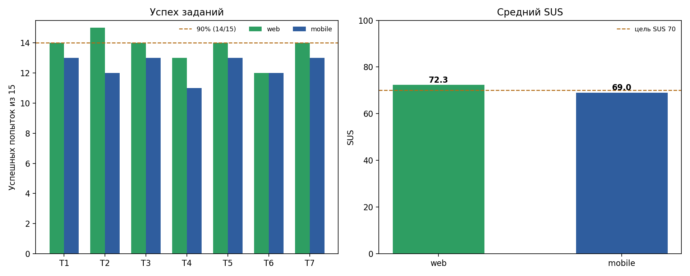
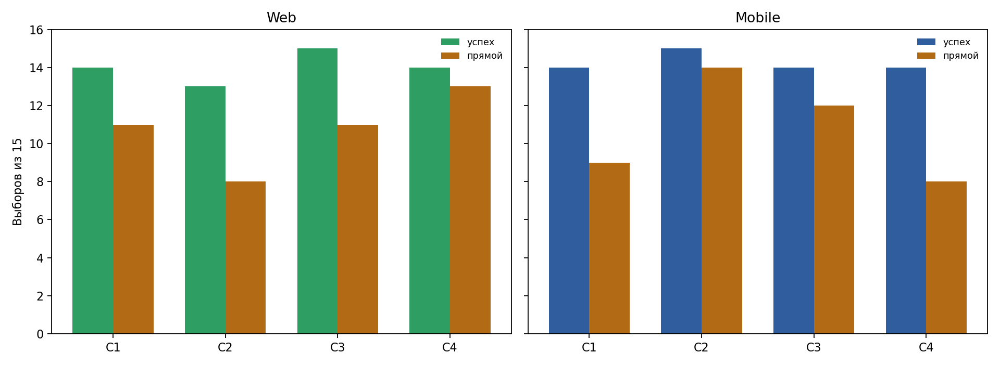
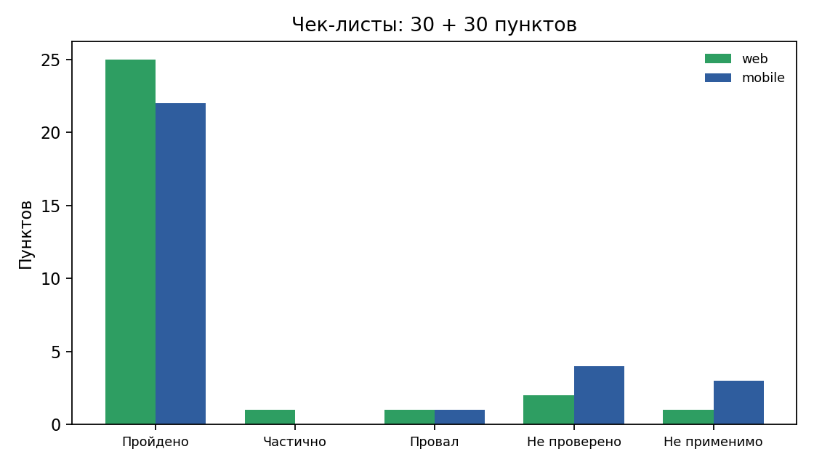
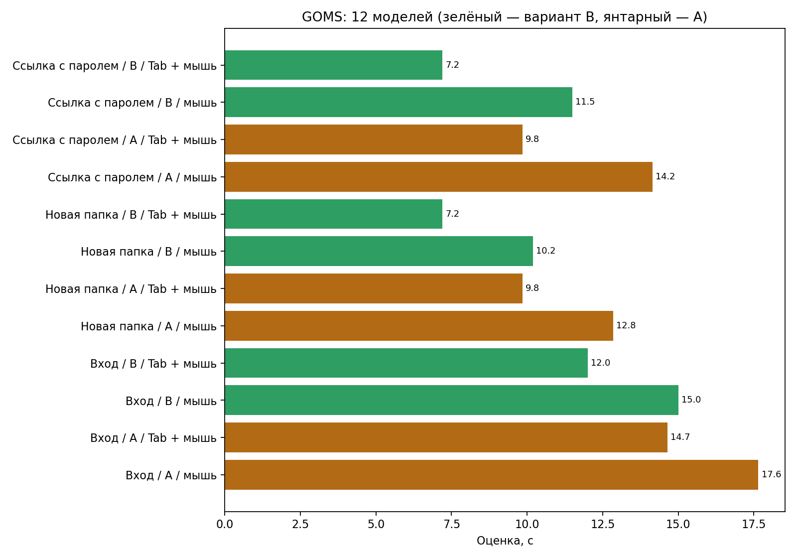

Лабораторная работа 6 · ФПМИ БГУ
Тестирование и оценка прототипа
GremlinDrive · веб- и мобильный интерфейсы. Проверены производительность, SUS, дерево, ожидания, чек-листы, GOMS и мобильная KLM/TLM.
Производительность и SUS
Успех 90% требует не менее 14 успешных из 15. На web порог не достигают T4 и T6, на mobile — все задачи. SUS web 72,33 достигает цели 70, mobile 69,0 — нет.

| Показатель | Web | Mobile |
|---|---|---|
| Средний SUS | 72,33 | 69,00 |
| Успешно за 60 с, всего из 105 | 84 | 64 |
| Среднее ошибок на попытку | 0,51 | 0,59 |
| Средний SEQ, 1–7 | 5,42 | 5,20 |
Дерево и ожидания
Офлайн-сортировка: 4 задания, 120 синтетических выборов. Наибольшие трудности — версии на web и запрос квоты на mobile. Treejack не запускался; локальная страница только демонстрирует дерево.

| Задача | Web: успех / прямой | Mobile: успех / прямой |
|---|---|---|
| C1: корзина | 14/15 · 11/15 | 14/15 · 9/15 |
| C2: версии | 13/15 · 8/15 | 15/15 · 14/15 |
| C3: участники | 15/15 · 11/15 | 14/15 · 12/15 |
| C4: квота | 14/15 · 13/15 | 14/15 · 8/15 |
Ожидания. E1 поиск — 13/15 web и 14/15 mobile; E2 общие папки — 14/15 и 14/15; E3 версии — 11/15 и 12/15; E4 квота — 14/15 и 15/15.
Чек-листы и проблемы
30 пунктов web и 30 mobile. Источники: эвристики Нильсена, WCAG 2.2 AA, MDN, SRS ЛР3 и методичка. Главные ограничения: административный режим защищён только демонстрационно, тёмная тема и скринридеры проверены не полностью.

| Платформа | Пройдено | Частично | Провал | Не проверено | Не применимо |
|---|---|---|---|---|---|
| Web | 25 | 1 | 1 | 2 | 1 |
| Mobile | 22 | 0 | 1 | 4 | 3 |
Реестр из 8 проблем: административный режим, срок ссылки на клиенте, тёмная тема, скринридеры, back-gesture/landscape, отсутствие Treejack и реальных сессий, нативные функции.
GOMS и мобильная KLM
12 моделей GOMS: 3 формы × 2 варианта × 2 способа ввода. Во всех моделях вариант B быстрее A, а Tab + Enter быстрее мыши. Мобильная KLM: вход 10,8 с, новая папка 6,0 с, ссылка 6,0 с.

Рекомендации
Web
- P0: серверная авторизация администратора.
- P0: серверная проверка срока и отзыва ссылки.
- P1: переименовать «Версии», уточнить создание новой версии.
- P1: разделить «Общие папки» и публичные ссылки.
- P1: упростить путь к запросу квоты.
- P2: тёмная тема и скринридеры.
Mobile
- P0: разобрать T4 (ссылка и гостевой просмотр).
- P0: разобрать T6 (запрос и решение по квоте).
- P1: упростить доступ к версиям и корзине.
- P1: back-gesture и landscape на устройстве.
- P2: биометрия, камера, офлайн-кэш.
- P2: скринридер и тёмная тема.